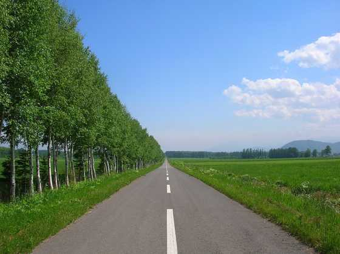
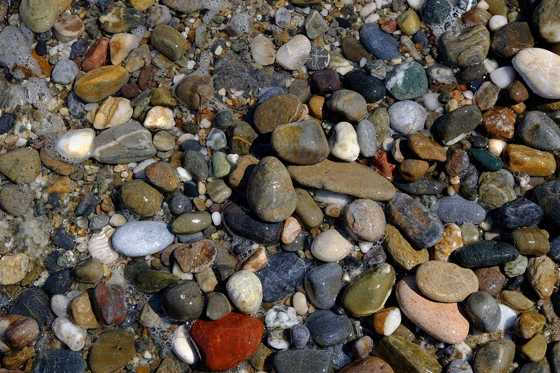
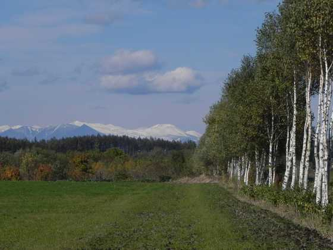
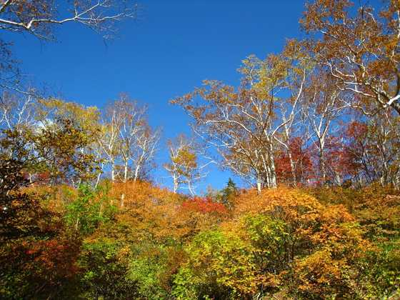
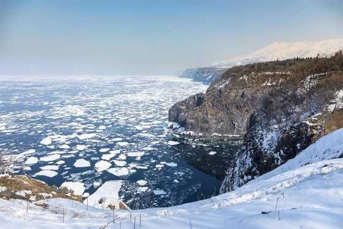
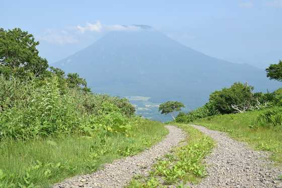
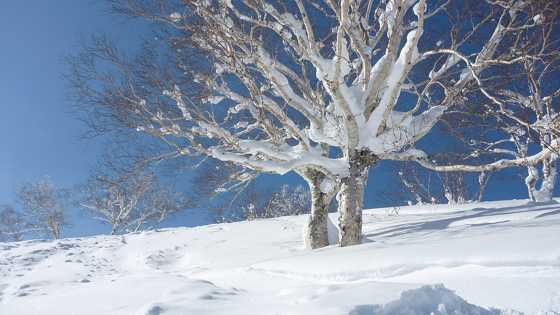
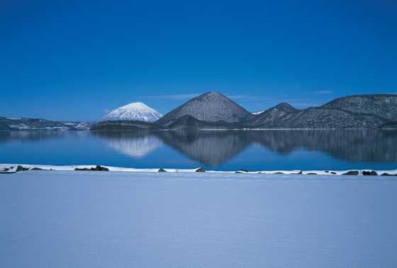
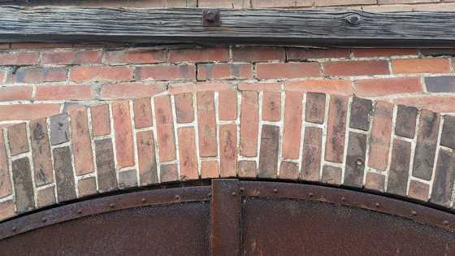

北海道江別市錦町の整体院
足が変われば、
からだは変わる。
体の中で唯一、地面と接する足から整える。「整体院 てら」は、足元から根本をみつめる整体院です。
お店の想い
足元から、慢性的なつらさを見直す。
「整体院 てら」の公式Instagramでは、足から体を整える「根本整体」を掲げ、「足が変わればカラダは変わる!」という言葉を紹介しています。体の中で唯一地面と接する足を整えることで、慢性的なつらさの改善を目指す考え方です。ハイライトには「なぜ足から診るのか」「疲れづらい足は自分で作れる!」といった項目が並んでいます。
店名の意味や施術の詳しい手順は確認できていないため、掲載していません。このページのそのほかの言い回し・配色は制作側のイメージです。




口コミ
こんな声が届くお店をめざして。
以下は制作側が作成したイメージ例です。実在のお客様の声ではありません。
イメージ例
立ちっぱなしの仕事で、夕方になると足が重くて。足元から見てもらうという考え方が新鮮でした。帰り道の一歩が軽く感じました。
イメージ例
自分でできるケアも教えてもらえると嬉しいです。毎日の積み重ねが大事だと気づかせてくれる、そんな場所だと思います。
イメージ例
静かで落ち着いた空間で、ゆっくり体と向き合えました。冬の寒い日でも通いやすい雰囲気です。





アクセス
江別市錦町でお待ちしています。
| 所在地 | 北海道江別市錦町48−1 川森アパート 101 |
|---|---|
| 電話 | 準備中 |
| 営業時間 | 準備中 |
| 定休日 | 準備中 |
| SNS | Instagram @seitaiintera |